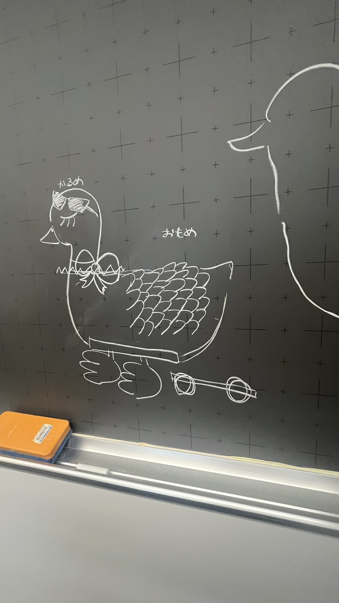

プロジェクトノート
世界一のアヒル【本体】

最終課題は「世界一のアヒル」をテーマに取り組んでいく。
本体、背景、車、光＆音の４つのグループに分かれて制作する。
プロセスメモ
■＝考えないといけないこと、疑問など ●＝具体的にやること →＝やったこと
■＝本体の素材を決める
●＝走らせるため軽い素材（3Dプリンター）を選ぶ
■＝本体の中にスピーカーを入れるスペースを作る
●＝本体を2つに分けて作ってスペースを作る、重さに偏りが出ないように密度やデザインを工夫する。
■＝「世界一」にするには？
●＝本体に色を付けるだけでなく、サングラスやリボン羽の装飾にこだわって「かわいさ」「かっこよさ」のあるアヒルを作る！
6/9~本体作成
私はアヒルの翼を作成した。chatGTPに「ステンドグラス風の鳥の翼」のデザインを考えてもらい、その画像をもとにレーザーカッターで翼を作った。


■＝アヒルのデザインはどうする？
●＝アヒルは3Dプリンターで作ったため、アクリルを使って透明感のあるデザインにする
→＝3㎜のアクリルを使ってステンドグラス風のデザインにした。
■＝色はどうやってつける？
●＝染色して透明感のある色にする
→＝暖色系と寒色系の色を使って染色した
■＝本体全体の横幅と縦幅が制限されているため、アクリルでどのように立体感を出す？
●＝熱で形を曲げて立体感を出す
■＝動きのある翼にするには
●＝チャームを付けたら動くときに揺れてかわいさが出る
私はアヒルの翼を作成した。chatGTPに「ステンドグラス風の鳥の翼」のデザインを考えてもらい、その画像をもとにレーザーカッターで翼を作った。
■＝アヒルのデザインはどうする？
●＝アヒルは3Dプリンターで作ったため、アクリルを使って透明感のあるデザインにする
→＝3㎜のアクリルを使ってステンドグラス風のデザインにした。
■＝色はどうやってつける？
●＝染色して透明感のある色にする
→＝暖色系と寒色系の色を使って染色した
■＝本体全体の横幅と縦幅が制限されているため、アクリルでどのように立体感を出す？
●＝熱で形を曲げて立体感を出す
■＝動きのある翼にするには
●＝チャームを付けたら動くときに揺れてかわいさが出る